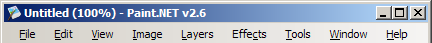

Menu Bar

There are nine top-level menus in Paint.NET:
-
File
Provides access to open, acquire, and save images. These options behave similarly to other document and image editing programs. There are also commands for setting the language of the user interface, and checking for updates.
-
Edit
Contains commands for easy manipulation of the image history, the selected region of the image, the selection itself, and the clipboard.
-
View
These commands change the way that the image or workspace are presented to you.
-
Image
Contains commands that alter the entire image, including all layers.
-
Layers
These commands alter only the currently active layer.
-
Effects
Contains effects which may be used to transform the current layer.
-
Tools
Provides quick access to selecting a specific tool, and the ability to alter some global tool options.
-
Window
These commands allow you to hide or show the floating utility windows, to reset them to their original locations, and to toggle their translucent effect.
-
Help
Provides quick access to this help documentation, the ability to send feedback or a bug report, and access to information about the authors.
Copyright © 2006 Rick Brewster,
Chris Crosetto, Dennis Dietrich, Tom
Jackson, Michael Kelsey, Brandon Ortiz, Craig Taylor, Chris Trevino, and Luke Walker. Portions Copyright
© 2006 Microsoft Corporation. All Rights Reserved.